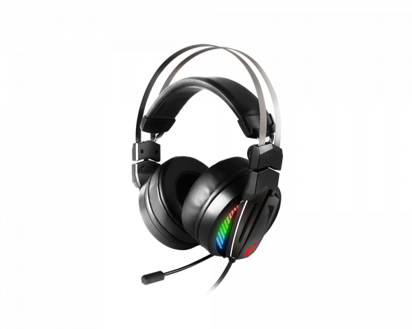

msi
Описание товара
IMMERSE GH70. Предназначение игровых гарнитур MSI Immerse — дать геймеру самое реалистичное звучание любимых игр. Услышь своих врагов до их появления благодаря точному позиционированию звука. Расслабляйся под любимую музыку, которая зазвучит для тебя богатством новых нюансов и деталей.
Характеристики товара |
|
|---|---|
| Ауидо | Сертификация Hi-Res Audio гарантирует высочайшее качество звука |
| Аудио | Улучшенное виртуальное звучание формата 7.1 |
| Подсветка | Потрясающие эффекты RGB-подсветки Mystic Light |
| Подсветка | Выбери своё из миллиона цветов с RGB Mystic Light |
| Управление | Тонкая настройка в приложении MSI Gaming Center |
| Управление | Контроллер Smart Audio |
| Комплектация | Полный набор аксессуаров и чехол в комплекте |
Подробное описание товара
В комплекте ты найдёшь всё, что нужно геймеру для реализации всех возможностей игровой гарнитуры Immerse GH70, включая кожаные и тканевые амбушюры, а также удобный качественный чехол.
Прочное оголовье из нержавеющей стали
Поворотные чашки для удобной транспортировки
Сменные амбушюры
Сертифицированные Hi-Res драйверы 50мм с поддержкой виртуального объёмного звучания 7.1
RGB-подсветка Mystic Light
Убирающийся микрофон
Все права защищены ©